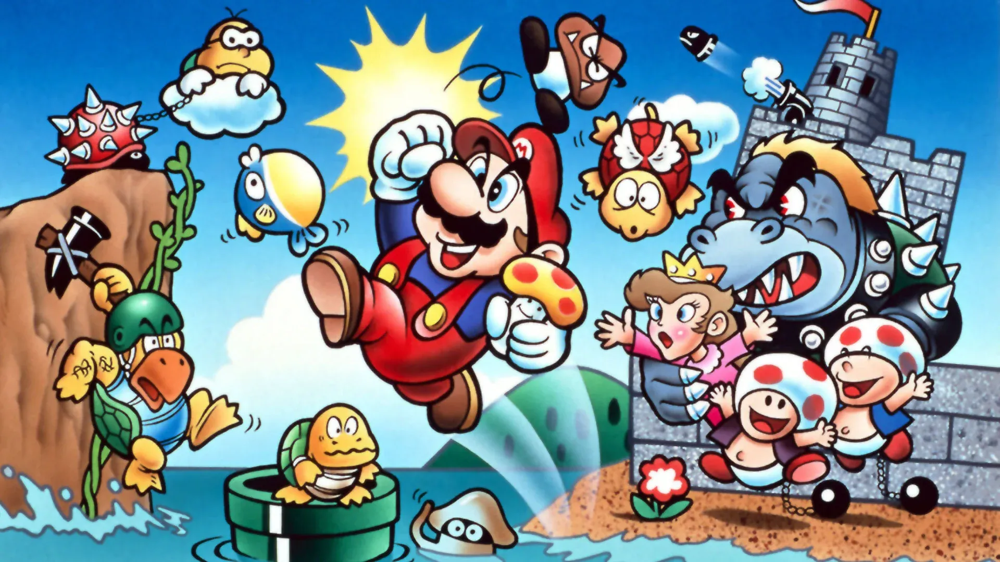
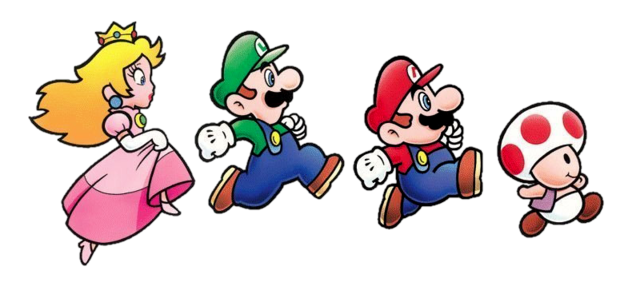
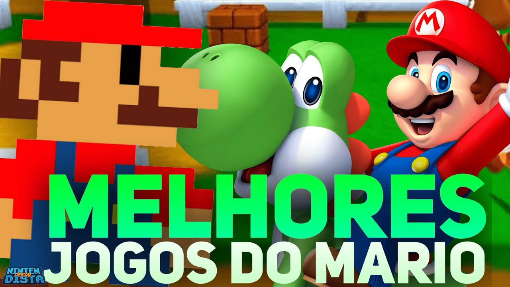

Super Mario é um dos principais nomes do mundo dos games e talvez o principal nome da marca Nintendo! Só por esse pequeno detalhe não podemos deixar de apresentar a verdadeira história do Super Mario. A história do jogo aparenta não possuir nenhuma distorção com o roteiro que conhecemos. Entretanto, o mistério e a discussão do jogo encontra-se no cogumelo que faz o Mario crescer e ficar mais forte. Para surpresa de muitos, o cogumelo vermelho com pintas brancas encontradas durante várias etapas do jogo, que faz o Mario crescer, é o Amanita Muscaria, um cogumelo alucinógeno!!
Quando ingerido esse tipo de cogumelo, o indivíduo começa a ter sensação de como se estivesse crescendo de tamanho, ou como se o resto do mundo estivesse encolhendo, fato que acontece no Mundo de Mario Bros.
De acordo com o manual do jogo, a história se passa num reino chamado Reino dos Cogumelos:
"Certo dia, o tranquilo Reino dos Cogumelos foi invadido pelo malvado Koopas e sua tribo de tartarugas, conhecido pelo uso de magia negra. Após a invasão, os indefesos moradores do reino foram transformados em pedras, barros e até mesmo flores. Com o reino quase acabado, uma pessoa tenta enfrentá-los, a Princesa Peach. Mas infelizmente, ela acaba se tornando prisioneira pelo Rei dos Koopas. Diante de todas as dificuldades, surge o nosso querido encanador, chamado Mario. Ele, então decide que irá salvar a princesa e assim libertar toda a população do reino das mãos de Koopas."Voltar

Mario é o protagonista da franquia. Apesar de ser um encanador, Mario ficou famoso por ser o herói do Reino dos Cogumelos — local onde a maioria dos jogos da série se passa. A principal habilidade do personagem consiste em consumir itens para alterar sua forma. Por exemplo, ele consegue aumentar de tamanho ao comer certos cogumelos e atirar bolas de fogo ao coletar flores especiais.
Irmão de Mario, Luigi é, normalmente, o personagem selecionado pelo “Jogador 2”. Nos jogos mais antigos, Luigi era uma cópia idêntica de Mario e tinha as mesmas habilidades. Porém, em títulos recentes, o encanador de roupa verde se diferencia por ter o pulo mais alto entre todos os personagens.
Originalmente conhecida como Princesa Toadstool, a realeza do Reino dos Cogumelos recebeu seu atual nome com o passar dos anos. A personagem começou como uma donzela em perigo, mas, hoje, é jogável em diversos títulos da franquia Mario Bros., com seu poder especial de flutuar.
Todos os habitantes do Reino dos Cogumelos são conhecidos como Toad. Eles são lacaios da Princesa Peach e, nos jogos mais antigos, são responsáveis por informar que a princesa está em outro castelo. Porém, um Toad se destacou dentre os demais. Essa criaturinha se tornou jogável nos games mais recentes de Mario, podendo utilizar super força para dizimar os inimigos. Os Toads costumam existir em diferentes cores, mas o Toad especial aparece sempre com um colete azul e manchas vermelhas na cabeça de cogumelo.
Yoshi, o dinossauro aliado de Mario, existe desde Super Mario World em 1990 e tornou-se conhecido pelos pés ligeiros e pela língua longa e flexível.

Mario é, sem dúvidas, o protagonista da franquia mais famosa e bem-sucedida dos videogames. Com dezenas de jogos em seu nome ao longo de diversas plataformas, o encanador conta com jogos antigos, novos, remakes, jogos de corrida, esportes, aventuras, RPG e muito mais. Em uma série cheia de tantas pérolas, selecionamos abaixo uma lista com os 5 melhores jogos do Mario para você que é fã do baixinho bigodudo! Clique na imagem para saber mais!


Fonte: Liga dos Games